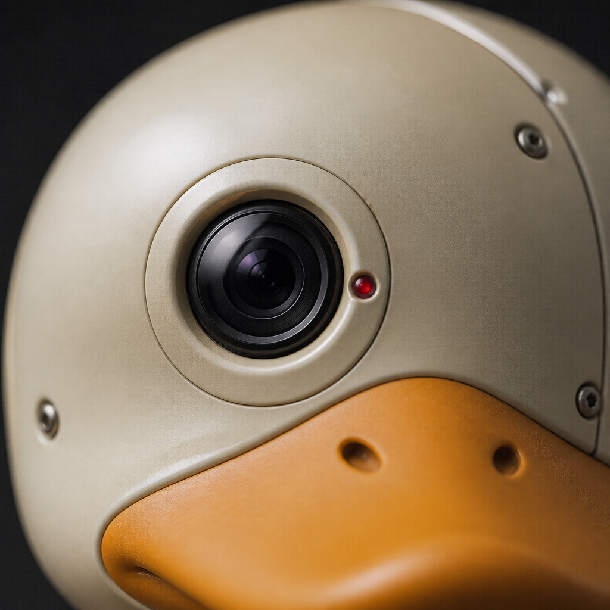
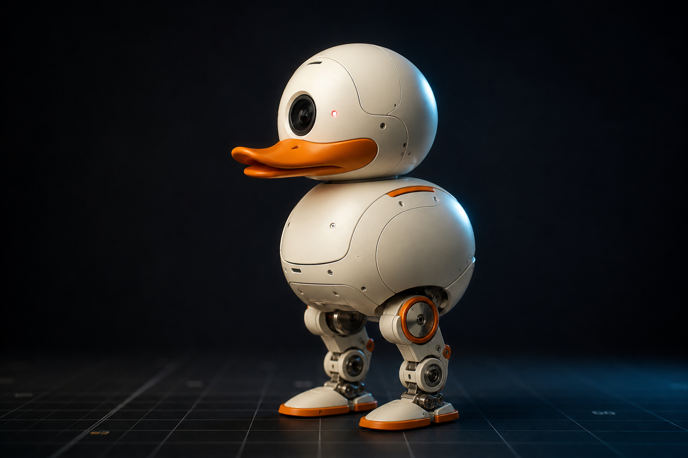
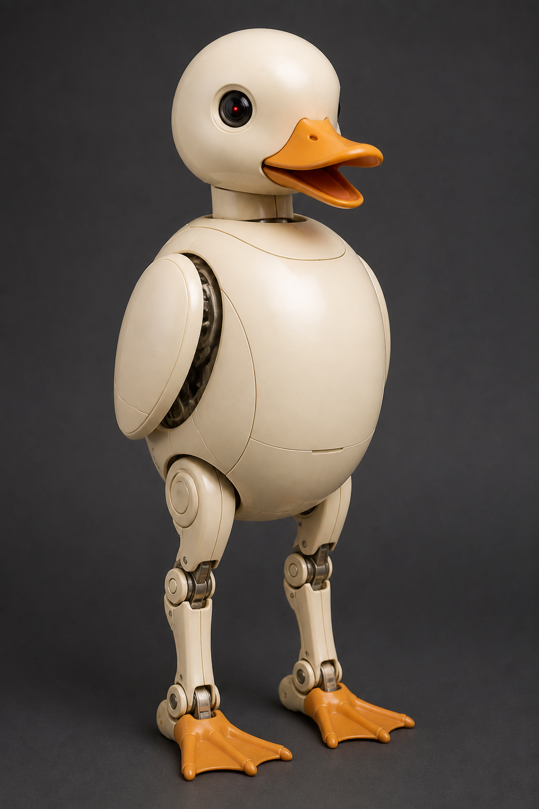
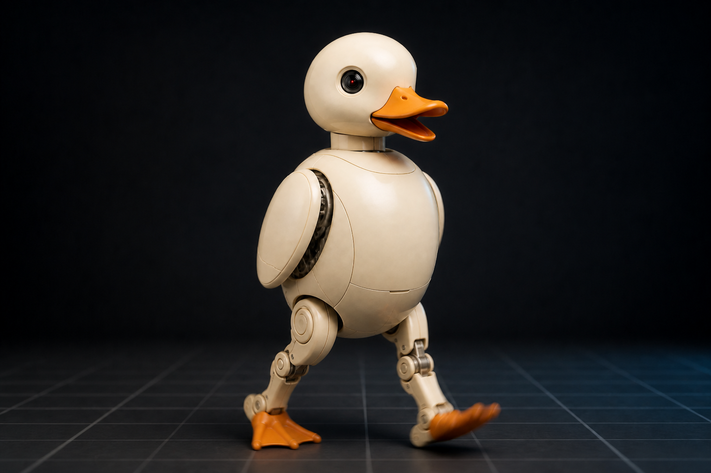
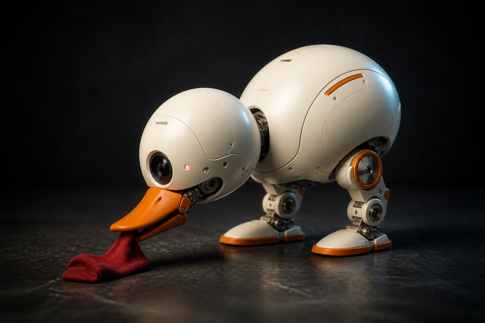
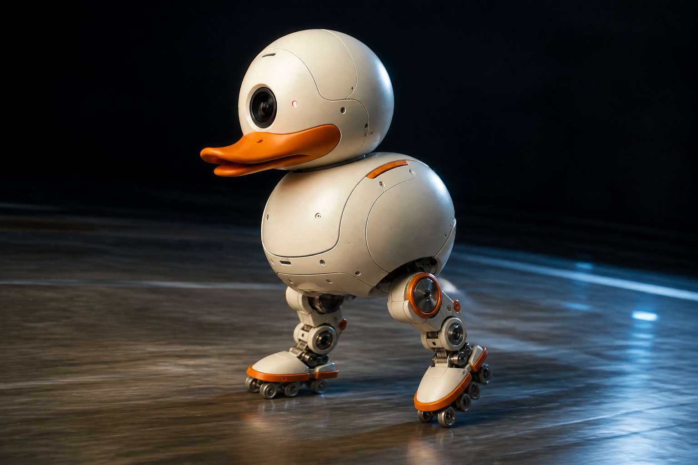
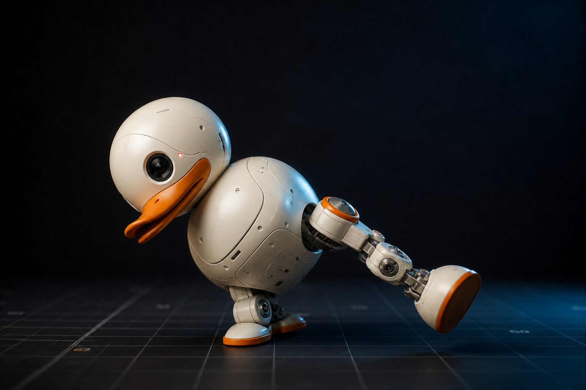
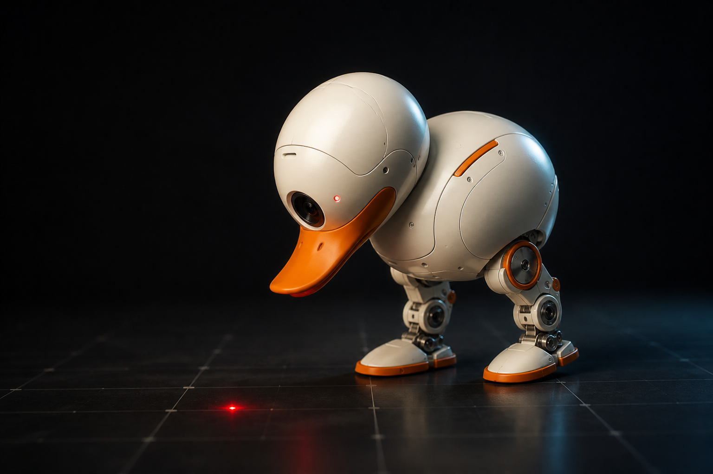
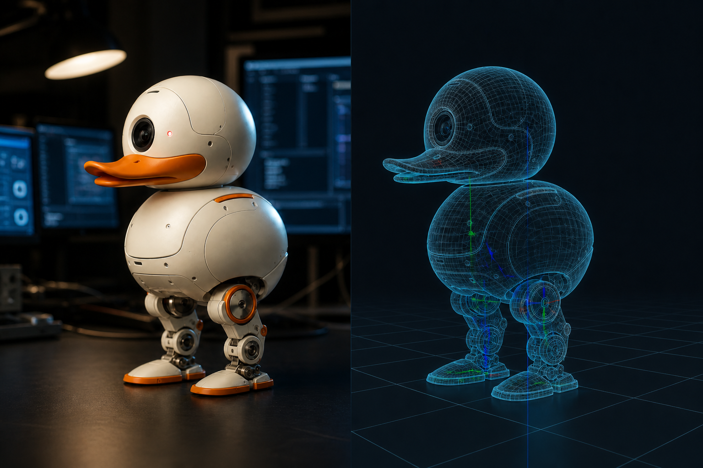

MOD.01
두부 유닛 · CEPHALIC

전면 카메라가 시야를 담당하고, 클래식 REC 램프에서 가져온 촬영 인디케이터가 카메라 사용 중임을 표시합니다. 헤드 IMU가 고개 자세를 따로 측정하고, 머리 쪽 NFC 안테나로 태그·다른 덕과 근접 식별이 가능합니다.
- FRONT CAMERA
- REC LED
- HEAD IMU
- NFC ANTENNA

01
HARDWARE MAP
핫스팟을 선택하면 해당 모듈의 센서·액추에이터·역할을 볼 수 있습니다.

MOD.01

전면 카메라가 시야를 담당하고, 클래식 REC 램프에서 가져온 촬영 인디케이터가 카메라 사용 중임을 표시합니다. 헤드 IMU가 고개 자세를 따로 측정하고, 머리 쪽 NFC 안테나로 태그·다른 덕과 근접 식별이 가능합니다.
02
ONBOARD POLICIES
출고 시 학습된 7개 동작. 게임패드로 즉시 조작하거나, 시뮬에서 다시 훈련해 배포할 수 있습니다.

속도 추종 보행 폴리시. 짧은 다리로 뒤뚱거리며 걷고, 앉았다가 스스로 일어섭니다. 쪼그려 앉기까지 기본 포함.

전신을 낮추고 관절형 부리를 닫아 양말·마커 같은 작은 물체를 집어 옮깁니다. 집은 뒤 다시 직립합니다.

악세서리 팩의 롤러를 장착하면 보행 폴리시가 스케이팅 로코모션으로 전환됩니다. 책상 위 레이스용.

흔한 낙상 자세에서 스스로 일어섭니다. 실패한 학습이 대형 휴머노이드처럼 위험해지지 않도록 설계된 핵심 루프입니다.

코드를 쓰지 않아도 레이저 포인터를 따라가고, 주변 자극에 반응합니다. 상자 속 게임패드로 즉시 드라이브 가능.

MuJoCo에서 폴리시를 학습하고 ONNX로 보드에 올립니다. 50Hz 온보드 루프. 커뮤니티에 동작을 공유할 수 있습니다.
VOICE ID
말은 하지 않습니다. 첫 부팅 때 SoC 시리얼로 생성된 고유 보이스 뱅크가 평생 따라다닙니다. 머리쓰다듬기 반응, 다른 덕과의 코랄도 가능합니다.
MULTI-AGENT
축구, 레이스, 합창. NFC와 근접 센서로 서로를 알아봅니다. 비싼 연구 플랫폼 없이 다중 로봇 실험을 책상에서 할 수 있습니다.
OPEN STACK
SDK·시뮬·RL 도구는 Apache-2.0. 기구/전자 설계 파일은 비공개입니다. robotctl monitor로 관절·IMU·ToF를 한 화면에서 봅니다.
03
DATASHEET
공식 프레스킷 기준. 카메라 FoV, LiDAR 거리, 라디오 버전은 아직 잠정값입니다.
04
SHELL VARIANTS
내부는 동일. 셸만 다릅니다.
크림 셸 · 오렌지 트림
그래파이트 · 옐로 트림
라벤더 · 옐로 트림
스카이 · 오렌지 트림